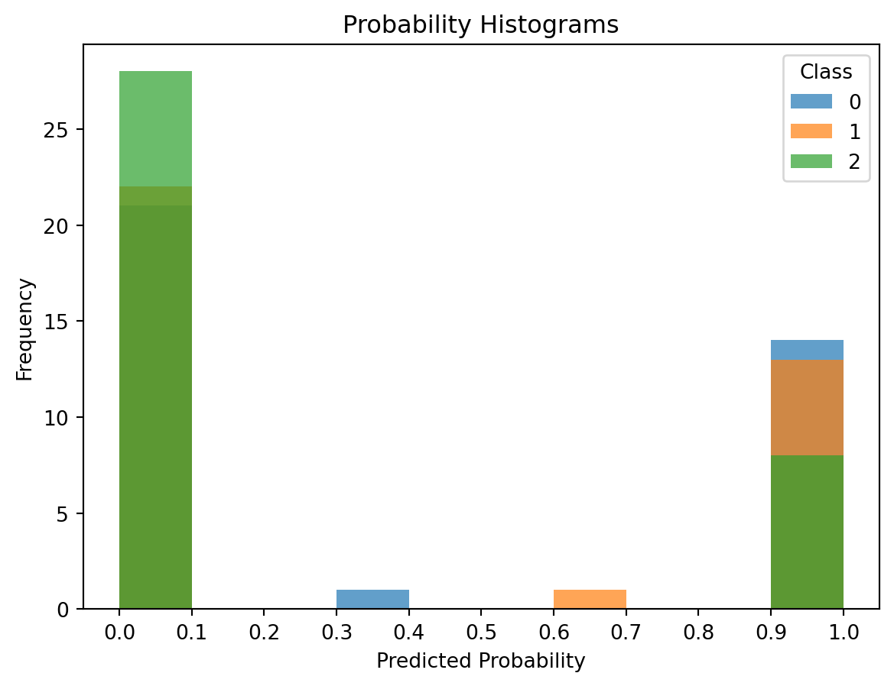

from sklearn.datasets import load_wine
# Load the Wine dataset
wine_data = load_wine()
# Get the data and labels
X = wine_data.data
y = wine_data.targetIntroduction
Bayes’ theroem is a well-known statistical theory that determines the likelihood of an event occuring given prior events. It follows the formula: 
This theorm was discovered by mathematician Thomas Bayes in 1763, and has since been applied to machine learning.
In this blog post we will implement Naive Bayes Classifier, whcih applies Bayes’ theroem to perform classification. Naive Bayes can be implemented for different types of probability distributions, especially the most common * Multinomial * Bernoulli * Gaussian For the scope of this post we will be focusing on the Gaussian distribution. Will attempt to predict the probability of each classification label, both with built-in methods and by hand.
We will be using the Wine dataset from sklearn. This dataset contains 178 samples from 3 different classes of wine. It has 14 features: * Class * Alcohol * Malicacid * Ash * Alcalinity of ash * Magnesium * Total phenols * Flavanoids * Nonflavanoid phenols * Proanthocyanins * Color intensity * Hue * 0D280_0D315_of_diluted_wines * Proline
This dataset is publically avaliable through the sklearn package with documentation avaliable.
Guassian Naive Bayes
Naive Bayes is a supervised machine learning algorithm based on Bayes’ theorm. It is used to perfrom classification. This algorithm assumes that features contribute equally and independently to the outcome.
Sklearn has a built-in method to perform Guassian Naive Bayes. We can build and train the model then predict the probabilities on the test data.
from sklearn.model_selection import train_test_split
from sklearn.naive_bayes import GaussianNB
from sklearn.metrics import accuracy_score
# Split the dataset into a training set and a testing set
X_train, X_test, y_train, y_test = train_test_split(X, y, test_size=0.2, random_state=42)
# Create a GaussianNB object
gnb = GaussianNB()
# Fit the model to the training data
gnb.fit(X_train, y_train)
# Predict probabilities on the test data
y_pred_proba = gnb.predict_proba(X_test)
print(y_pred_proba)[[9.99991820e-01 8.17986629e-06 1.75844851e-31]
[9.99999053e-01 9.46598997e-07 1.78086968e-25]
[1.13448660e-18 1.99953560e-03 9.98000464e-01]
[9.99999999e-01 7.71694277e-10 4.13905530e-37]
[4.85016095e-07 9.99999515e-01 1.99877483e-22]
[1.00000000e+00 2.47066704e-12 1.42452382e-33]
[7.95594246e-11 1.00000000e+00 6.55702700e-13]
[3.15918793e-21 4.37517039e-12 1.00000000e+00]
[1.94710799e-04 9.99805289e-01 5.67647705e-29]
[2.42169478e-15 5.33549614e-04 9.99466450e-01]
[9.93827013e-01 6.17298732e-03 1.83781764e-32]
[1.37658180e-18 3.84803880e-12 1.00000000e+00]
[9.86542823e-01 1.34571766e-02 3.14047577e-20]
[7.68155801e-16 9.82464750e-01 1.75352499e-02]
[1.00000000e+00 2.78016158e-13 4.69430467e-35]
[1.25924089e-07 9.99999874e-01 2.81153369e-15]
[4.42564516e-11 1.00000000e+00 4.05508262e-12]
[2.99568596e-12 1.00000000e+00 1.13161503e-13]
[1.00000000e+00 1.16206194e-11 9.87868150e-40]
[1.13133637e-08 9.99999989e-01 2.19397345e-19]
[1.00000000e+00 4.04187890e-22 6.17606318e-59]
[3.18591996e-01 6.81408004e-01 6.80506976e-35]
[2.43168670e-16 9.99826495e-01 1.73505362e-04]
[1.23408452e-19 2.98728031e-13 1.00000000e+00]
[7.10903161e-29 2.15985533e-18 1.00000000e+00]
[7.07192544e-24 1.17724326e-18 1.00000000e+00]
[4.53176013e-08 9.99999955e-01 2.35118322e-16]
[1.36668645e-02 9.86333136e-01 1.76260378e-16]
[8.04757256e-14 9.99999270e-01 7.30054928e-07]
[9.99999997e-01 2.70647612e-09 9.92082030e-30]
[9.99999305e-01 6.94947125e-07 9.14210749e-31]
[6.43006687e-09 9.99999994e-01 1.37380635e-16]
[8.16729277e-22 7.29635235e-06 9.99992704e-01]
[1.00000000e+00 3.47818916e-15 1.21420599e-41]
[1.00000000e+00 1.88697780e-10 2.34380035e-32]
[9.99999997e-01 2.75077349e-09 2.65193217e-46]]This 2D array shows the probability of each test point being classified for each class. From basic probability and Bayes’ theorem we know that the probabilites of each sub-array should add up to 1. We can perform a simple check.
import numpy as np
# Calculate the sum of each sub-array
sums = np.sum(y_pred_proba, axis=1)
print(np.round(sums, 1) == 1)[ True True True True True True True True True True True True
True True True True True True True True True True True True
True True True True True True True True True True True True]We round to take care of any repeating decimals. For example, the first extry in the array before rounding was 1.000000000000001. The check above shows that the probabilities of each sub-array do in fact sum to 1.
Predicting Classification Probability By Hand
Having a built-in fuction provided to us is very convient, however, it doesn’t allow us to fully appreciate the application of Bayes’ Theorem. We will calculate these classificaiton probabilities by hand and compare our calculations to the results of sklearn’s built-in method.
First we will calculate the prior probabilities, or the proportion of instances of that class in the dataset.
import numpy as np
# Calculate the prior probabilities
prior_probs = np.bincount(y_train) / len(y_train)Now we will calcualte the likelihood. The likelihood is the probability of the data given the class, and we will use the Gaussian normal distribution formula:
from scipy.stats import norm
# Calculate the mean and standard deviation for each feature for each class
means = np.array([X_train[y_train == i].mean(axis=0) for i in np.unique(y_train)])
stds = np.array([X_train[y_train == i].std(axis=0) for i in np.unique(y_train)])
# Calculate the likelihood
likelihoods = [norm(loc=means[i], scale=stds[i]).pdf(X_test) for i in np.unique(y_train)]Next we will apply Bayes’ Theorem using the calulations performed in the previous two steps.
# Apply Bayes' theorem
posterior_probs = [prior_probs[i] * np.prod(likelihoods[i], axis=1) for i in np.unique(y_train)]Finally, we will normalize these probabilites to sum to 1.
# Normalize the posterior probabilities
posterior_probs = np.array(posterior_probs).T
posterior_probs = posterior_probs / posterior_probs.sum(axis=1, keepdims=True)
print(posterior_probs)[[9.99991700e-01 8.29987299e-06 1.60938552e-31]
[9.99999054e-01 9.45532479e-07 1.65168801e-25]
[1.00757757e-18 1.99830633e-03 9.98001694e-01]
[9.99999999e-01 7.66094807e-10 3.63189055e-37]
[4.84902416e-07 9.99999515e-01 1.78295768e-22]
[1.00000000e+00 2.44562403e-12 1.28719895e-33]
[7.84509114e-11 1.00000000e+00 6.21497679e-13]
[2.90891765e-21 4.32284791e-12 1.00000000e+00]
[1.95571203e-04 9.99804429e-01 5.15534018e-29]
[2.30552490e-15 5.35092786e-04 9.99464907e-01]
[9.93882534e-01 6.11746635e-03 1.58918556e-32]
[1.28452945e-18 3.85660910e-12 1.00000000e+00]
[9.86553423e-01 1.34465768e-02 2.92576879e-20]
[7.15994008e-16 9.82564613e-01 1.74353866e-02]
[1.00000000e+00 2.77942746e-13 4.10380310e-35]
[1.25569301e-07 9.99999874e-01 2.67261512e-15]
[4.32542473e-11 1.00000000e+00 3.85026190e-12]
[2.90319319e-12 1.00000000e+00 1.02367466e-13]
[1.00000000e+00 1.15793759e-11 8.70345678e-40]
[1.10128578e-08 9.99999989e-01 2.06469733e-19]
[1.00000000e+00 4.02312068e-22 5.24692161e-59]
[3.18946528e-01 6.81053472e-01 5.85549525e-35]
[2.00667093e-16 9.99836216e-01 1.63783730e-04]
[1.18261321e-19 2.99427793e-13 1.00000000e+00]
[6.16841691e-29 2.13123817e-18 1.00000000e+00]
[6.55609746e-24 1.16259746e-18 1.00000000e+00]
[4.53638332e-08 9.99999955e-01 2.19344400e-16]
[1.35808559e-02 9.86419144e-01 1.61734314e-16]
[7.41663507e-14 9.99999295e-01 7.04700897e-07]
[9.99999997e-01 2.71500052e-09 9.15171905e-30]
[9.99999311e-01 6.89145891e-07 8.16290642e-31]
[6.30992893e-09 9.99999994e-01 1.31216900e-16]
[7.36198919e-22 7.25068392e-06 9.99992749e-01]
[1.00000000e+00 3.46489065e-15 1.08835365e-41]
[1.00000000e+00 1.86862919e-10 2.10177338e-32]
[9.99999997e-01 2.80751532e-09 2.38103607e-46]]Now we can check our work by comparing these calculations to the output of sklearn’s built-in function.
print(np.round(y_pred_proba, 2) == np.round(posterior_probs, 2))[[ True True True]
[ True True True]
[ True True True]
[ True True True]
[ True True True]
[ True True True]
[ True True True]
[ True True True]
[ True True True]
[ True True True]
[ True True True]
[ True True True]
[ True True True]
[ True True True]
[ True True True]
[ True True True]
[ True True True]
[ True True True]
[ True True True]
[ True True True]
[ True True True]
[ True True True]
[ True True True]
[ True True True]
[ True True True]
[ True True True]
[ True True True]
[ True True True]
[ True True True]
[ True True True]
[ True True True]
[ True True True]
[ True True True]
[ True True True]
[ True True True]
[ True True True]]We see that our calculations match and we have successfully calculated the classificaiton probabilities.
Probability Histogram
We can visualize these predicted probabilities by plotting the probability histograms.
import matplotlib.pyplot as plt
# Predict probabilities on the test data
y_pred_proba = gnb.predict_proba(X_test)
# Plot a histogram for each class
for i in range(y_pred_proba.shape[1]):
plt.hist(y_pred_proba[:, i], bins=10, label=str(i), alpha=0.7)
plt.xlabel('Predicted Probability')
plt.ylabel('Frequency')
plt.title('Probability Histograms')
plt.legend(title='Class')
plt.xticks(np.arange(0, 1.1, 0.1))
plt.show()
From this we see that Class 2 is either predicted to have a very low probability of classification or a very high probability. Class 1 is predicted to have a high probability of classiication, while Class 0 appears to be infrequent but with a high probability.
Prediction and Evaluation
After performing these calulations, the Naive Bayes algorithm selects the highest posterior probability to determine which label to classify the data point as. We will now finish predicting the labels of the test data set and evaluate the model.
from sklearn.metrics import accuracy_score
# Predict the labels of the test data
y_pred = gnb.predict(X_test)
# Calculate the accuracy of the model
accuracy = accuracy_score(y_test, y_pred)
print("Accuracy: ", accuracy)Accuracy: 1.0Overall, Naive Bayes is generally considered a good algorithm that performs both fast and fairly accurate. We see that our model achieved an accuracy of 100%, and this is largely due to the features adhearing to the conditional independence assumption.
References
- https://www.britannica.com/topic/Bayess-theorem#:~:text=The%20theorem%20was%20discovered%20among,of%20a%20parameter%20under%20investigation.
- https://www.datacamp.com/tutorial/naive-bayes-scikit-learn
- https://www.ibm.com/topics/naive-bayes#:~:text=As%20a%20result%2C%20it’s%20one,the%20conditional%20independence%20assumption%20holds.